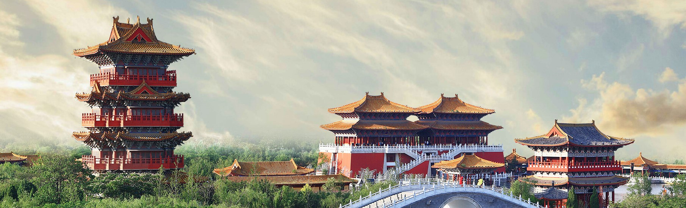
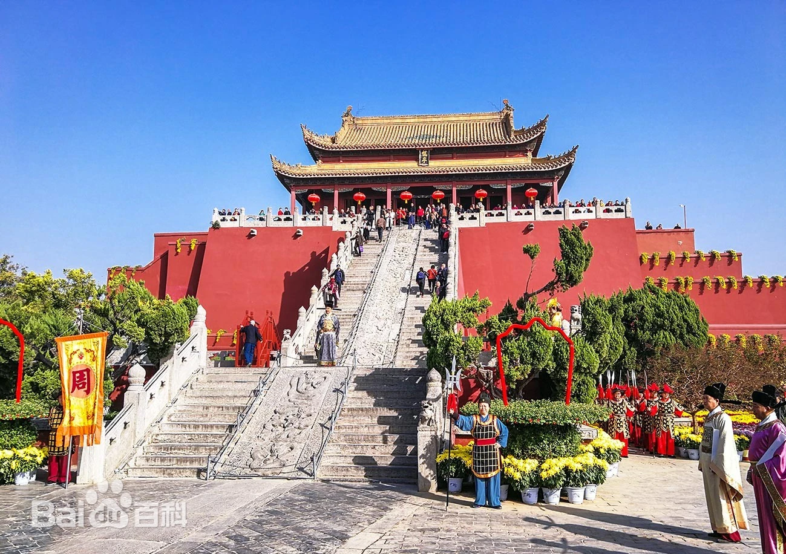
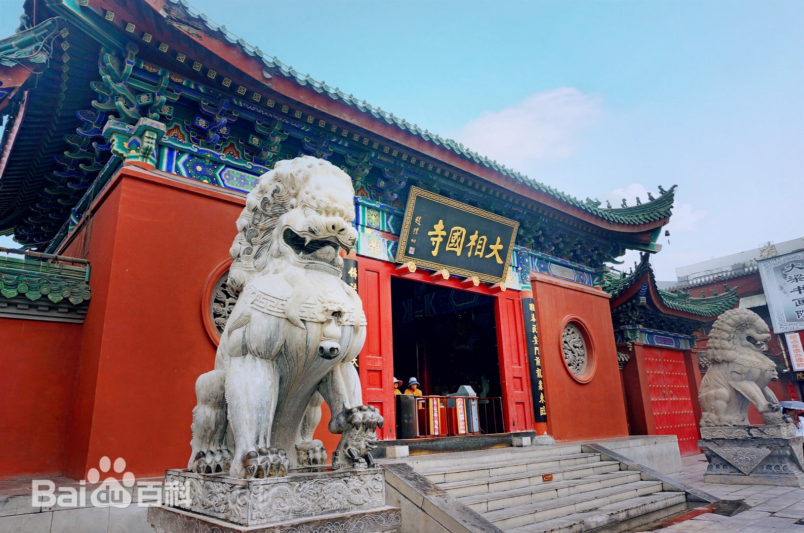
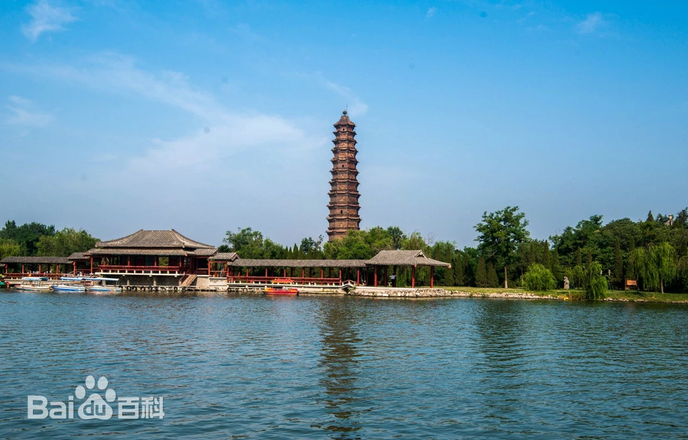
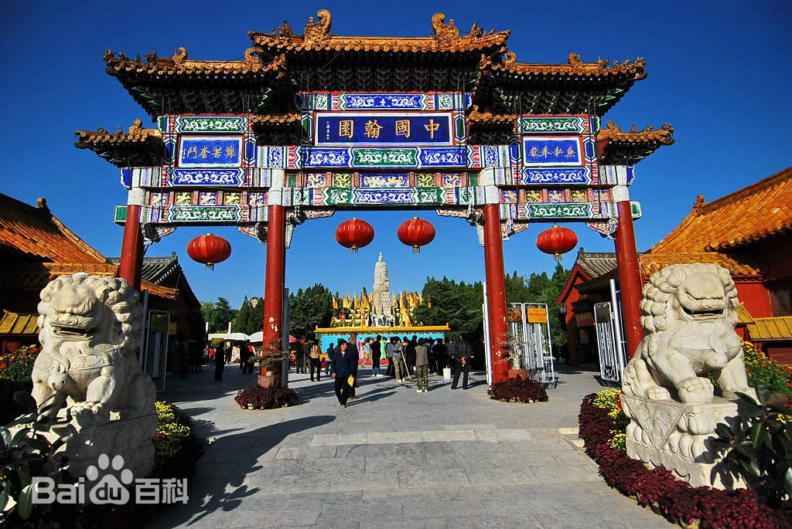
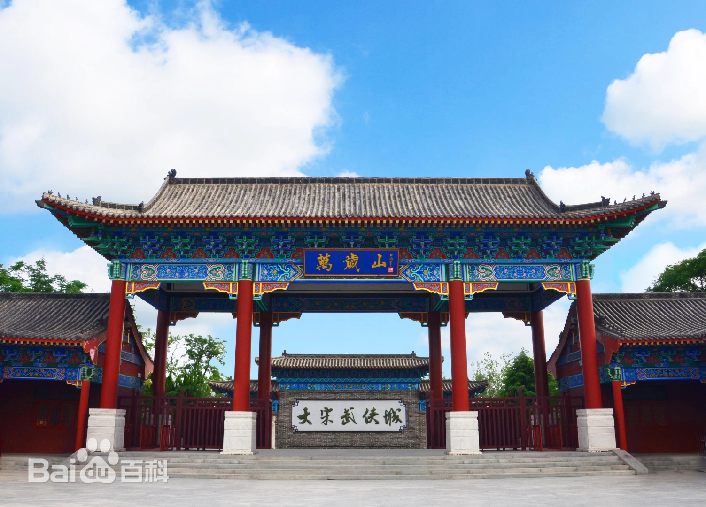
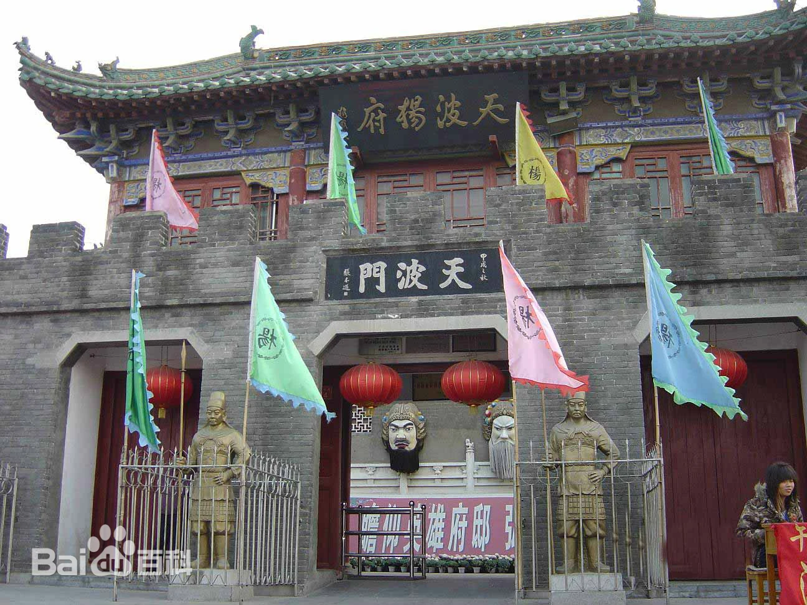
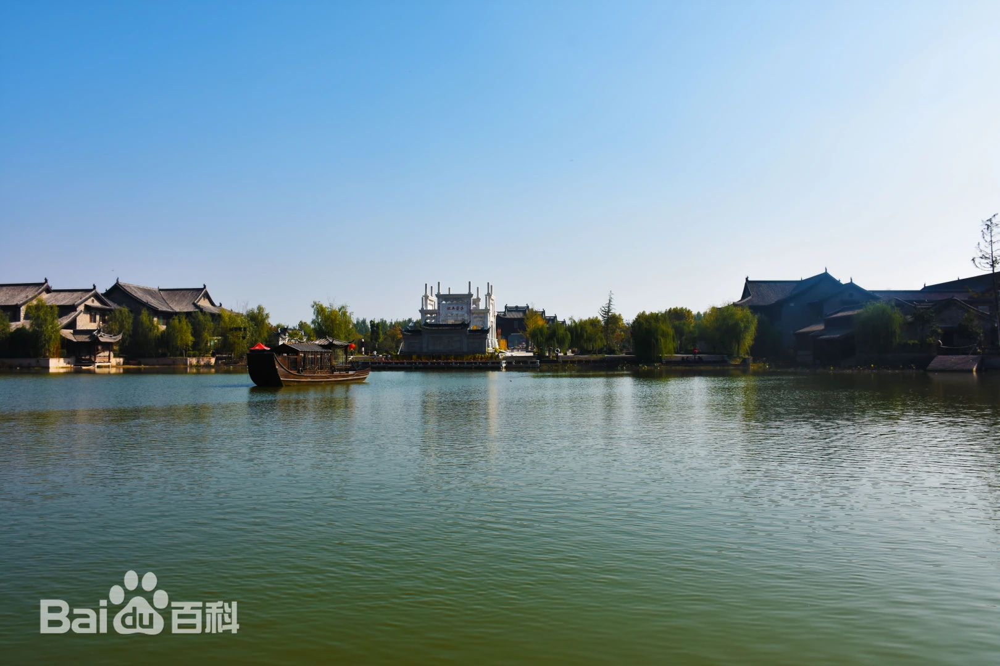
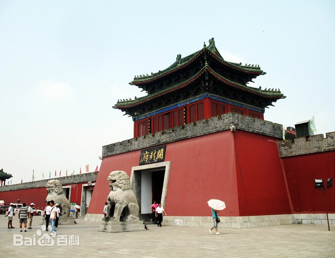

|

清明上河园一朝步入画卷，一日梦回千年 明上河园景区坐落在八朝古都开封，是按照中国传世名画《清明上河图》为蓝本1:1复原再现的大型宋代历史文化主题公园。历史成就开封，文化成就名园。 自1998年正式对外开放以来，清明上河园始终坚持以“再现千年历史画卷，建设国家精品景区”为发展方针，通过宏大的规模、丰富的宋文化内涵、独特的古代娱乐设施、新颖的表演剧目、全新的休闲度假理念， 始终引领着中原文化旅游产业的发展方向，创造了旅游界令人称颂的“清明上河园”现象。 二十多年来，清明上河园先后斩获了中国旅游知名品牌、国家文化产业示范基地、国家5A级旅游景区、中国十大文化旅游景区、影响世界的中国旅游文化知名品牌、河南省省长质量奖等诸多荣誉。 >>> |
|---|
|

龙亭公园龙亭公园位于河南省开封市龙亭区中山路北端，按清万寿宫布局而建的古建筑群体，自南向北由午门（景区南大门）、玉带桥、嵩呼、朝门、东西朝房、照壁、龙亭大殿、宋代蜡像馆、东西垂花门和东西跨院、北宋东京城和皇城模型、北宋皇城拱宸门遗址、 《五岳真形碑》方亭、北门、东便门等组成，另有植物造型园、盆景园、梅园、园林景观等，是国家AAAA级旅游风景区，被中央文明办、国家建设部、国家旅游局评为全国文明风景旅游区示范点。 >>> |
|

大相国寺大相国寺，原名建国寺，位于河南省开封市自由路西段 [1]，是中国著名的佛教寺院。 大相国寺始建于北齐天保六年（555年），唐代延和元年（712年），唐睿宗因纪念其由相王登上皇位，赐名大相国寺。北宋时期，相国寺深得皇家尊崇，多次扩建，是京城最大的寺院和全国佛教活动中心。后因战乱水患而损毁。清康熙十年（1671年）重修。 大相国寺现存有天王殿、大雄宝殿、八角琉璃殿、藏经楼、千手千眼佛等殿宇古迹。1963年被评为第一批河南省文物保护单位 ，1992年8月恢复佛事活动，复建钟、鼓楼等建筑。整座寺院布局严谨，巍峨壮观，2002年被评定为国家AAAA级旅游景区，2013年被评为第七批全国重点文物保护单位 >>> |
|

开封铁塔铁塔位于河南省开封市顺河回族区，建于公元1049年，素有“天下第一塔”的美称。塔高55.88米，八角13层，是中国最高大、历史最悠久、保存最完整的一座琉璃砖塔，因此地曾为开宝寺，又称“开宝寺塔”；又因遍体通砌褐色琉璃砖，浑似铁铸，从元代起民间称其为“铁塔”。 [1] 该塔整体造型秀丽挺拔，琉璃构件光彩亮丽，整个塔身由下至上逐层递减，形成自然收分，呈现出宋代佛塔刚劲有力的轮廓特征。塔身采用许多结构砖，砖与砖之间有槽有眼，互相咬合，严密合缝，砖的形状达28种之多。外壁装饰有飞天，降龙，麒麟，伎乐等五十多种图案。 >>> |
|

中国翰园碑林中国翰园位于开封市龙亭湖风景区西北隅，是李公涛先生带领全家自筹资金发起创建的一座融山水艺术景观和古典园林建筑艺术为一体，集古今中外诗词、书画、碑刻艺术之大成的文化园林，园区占地120亩，南部为园林风景区，北部为碑刻展示区，展出书画碑刻3800余块，长达六华里的碑廊以朝代为序，镶嵌了历代书法名家的代表碑帖，同时以书体分镶的现代碑廊全面展示了现当代书法大家的艺术风采，被评为“河南省文化旅游先进单位”、“河南省文化产业示范基地”和“国家AAAA级旅游景区”，并获“中国驰名商标”。 >>> |
|

万岁山·大宋武侠城万岁山·大宋武侠城是开封市万岁山游览区有限公司斥巨资于2003年10月在原国家森林公园的基础上建立起来的以大宋武侠文化 [1]为核心的AAAA级 [2]主题景区， [1]占地五百余亩，地处开封城西北部，是一座以宋文化、城墙文化和七朝文化为景观核心、以大宋武侠文化为旅游特色、以森林自然为格调、兼具休闲功能的多主题、多景观的大型游览区。 >>> |
|

天波杨府天波杨府是北宋抗辽英雄杨业的府邸，原位于北宋首都东京（今河南省开封市）城内西北隅、天波门的金水河旁，故名“天波杨府”。 天波杨府新址建成于1994年，位于河南省开封市龙亭湖风景区，是一处集湖光山色，历史文化和宋代建筑群于一体的大型私家园林，是开封市极具特色的国家AAAA级旅游景区。 >>> |
|

朱仙镇启封故园朱仙镇启封故园，即朱仙镇国家文化生态旅游示范区。是河南省、开封市重点项目和省、市重点旅游项目，由河南开心一方置地集团投资、河南省朱仙镇文化旅游有限公司开发的集文化、旅游、生态农业观光于一体的文化旅游项目。该项目位于开封市朱仙镇北侧、开尉路以西、运粮河两侧，总建设周期10年，计划累计投资120亿，总建筑面积80多万平方米。 >>> |
|

开封府开封府，位于河南省开封市包公东湖北岸，是北宋京都官吏行政、司法的衙署，被誉为天下首府，是国家AAAA级旅游景区。 史料记载，北宋开封府共有183任府尹，尤以包公打座南衙而驰名中外。今日重建的开封府，占地60余亩，建筑面积1.36万平方米，与位于包公西湖的包公祠相呼应，同碧波荡漾的三池湖水相映衬，形成了东府西祠、楼阁碧水的秀美景观。 >>> |

古城开封 璀璨文明
2023－2024 版权所有 陈家奇文化有限公司